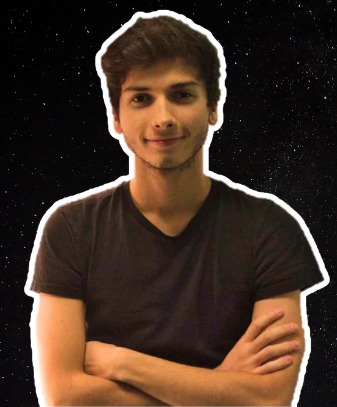

Sou aluno de doutoramento do projeto Humans on Mars na Universidade de Bremen. Estudei Biologia na FCUL e Biotecnologia na Universidade de Wageningen. De momento estou na Universidade de Stanford por 3 meses a fazer um estágio. Agora, um dos meus maiores interesses é olaria!
Para ti, o que é a Astrobiologia?
O estudo da evolução e distribuição da vida no universo (passado, presente e futuro). Isto pode-se traduzir em muitos tipos de investigação diferente. O meu trabalho é mais na colonização de Marte, o que se pode considerar astrobiologia no sentido de que é a progressão da vida para outro planeta. Em prática, eu considero-me mais biotecnólogo para o espaço.
O que dirias que é a parte mais emocionante do que fazes?
O tópico sci-fi, mas que na realidade pode ser concretizável nas próximas décadas. Nós trabalhamos em casos concretos que podem ser aplicados em Marte (ou Lua/Terra) em breve.
Como imaginas ser a implementação futura do teu trabalho?
Bioreactores em Marte para produzir oxigénio, comida para astronautas, bioplásticos, etc.
Que conselho dás aos futuros astrobiólogos portugueses?
O principal seria para não se afunilarem demasiado depressa. A maioria das pessoas na área tem bastante conhecimento na ciência "básica" como biologia/química, o que as torna competitivas nesta e noutras áreas. Segundo seria para não terem medo de mandar um email a pedir oportunidades/estágios.
Ananás na pizza: sim ou não?
Em geral sim, deixem as pessoas viverem em Paz.